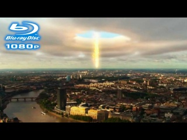
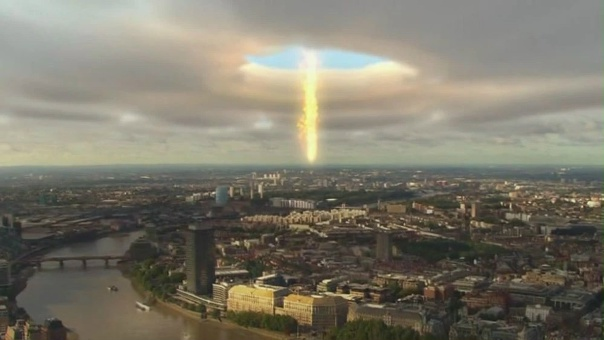

Весь 3-й сезон (5 серий)
 | Весь 3-й сезон (5 серий) |
Day Three
Дата выхода: 8 июля 2009
Формат: 60-минутный эпизод
| Варианты озвучек: | * Разные: смотрите по инструкции |
|---|---|
| Скачивание и просмотр: |
Внимание всей планеты обращается на Великобританию. 456 объявляют «Мы здесь», и новое расследование Торчвуда продолжается. Огненный столп спускается с небес в центр Лондона, и Торчвуду предстоит защищать свои семьи, когда противостояние с правительством становится более ожесточённым. Что таят в себе воспоминания Клема?
